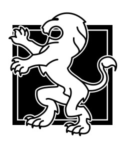
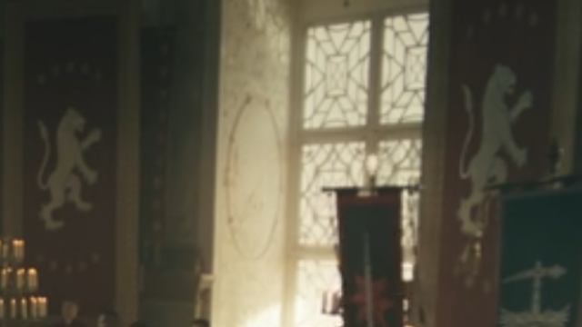
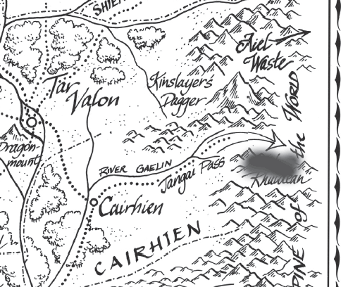

Episode two kicked off with the cold open 20 years ago with Morgase and Elaida at a coronation ceremony. This is evidently a flashback to the end of the Third Acession War that Morgase had to fight. Morgase takes to the throne and has the leaders of several major houses, perhaps those that stood against her claim. She forces them to bow down and swear fealty to her. Even though all three swear fealty, she ends up having all three of their throats slit, stating that she could not have things devolve into war again. The scene finished with the crowd shouting, “All hail the queen”.
A few things to point out here. This scene is completely made up. I am unaware of anywhere this shows up in the source material. This appears to be a scene they wanted to create to explore another female character’s back story further. Unfortunately, it ruins a character that is supposed to be seen as good. Not only does she come off as ruthless for killing people that have sworn fealty to her in public, one of those people was a child. All three were women, of course, and one of them was a young girl.
Further, this scene shows the nobles of Caemlyn are as diverse racially as Los Angeles. Of course, this was done for the same woke ideology that I described in the prior article n this. The Lion symbol for Caemlyn was changed to be a female lion, with the mane removed. The costumes of the servants looked crazy, with these very strange hats on.
 For the record, a scene focusing on female characters
Next we get a brief scene with Elayne scrubbing the floors of an Aes Sedai room. She overhears Verin and another Aes Sedai talking about events with the dark friends/black Ajah. She quickly ducks back into the room to appear like she was not listening, but Verin approaches Elayne and asks her if the music that they hear from within the Tower or outside was Elayne’s mother’s coronation music.
First, while this scene is completely made up, it is not offensive. Verin acts a little more like Verin from the books, and other than that, it seems fine. However, Verin should be in the Two Rivers with Alana during this period.
For the record, another scene focusing on female characters.
We then cut to Morgase and Elaida walking down a hallway in the Tower to approach the Hall of the Sitters. There are women going before the procession, throwing flower petals onto the floor for Morgase and Elaida to walk on. Morgase has lord Gaebril with her as well. The procession stops before entering and has to wait until allowed to enter, which seems to upset Morgase. The sons are announced, followed by Lord Gaebril, and then Elaida and Morgase. There is a back and forth with Siuan and Morgase about Elayne, wanting to see her, and how the Tower had not kept Elayne safe. Elaida noticed the damage from the fight in the Hall, and Leane has a moment of struggling to remember Gaebril. Siuan says she will take Morgase to see Elayne herself.
There is so much wrong here. While this was inspired by Morgase coming to the Tower to get Elayne, in the books, Elayne is not there. Further, Morgase having people throwing petals on the floor is not something it seemed like Morgase would have had done. Her bringing her sons also did not happen here because they were already training at the Tower. And Lord Gaebril (Rhavin) was not in the picture at this time, and throws everything off. It is my understanding that he is using Compulsion to make people think he has been there for a long period of time, but that is not my understanding of how compulsion works. It allows the user to command someone to do something, not fill in memories and feelings towards a person in that way. You could command someone to worship and obey you, but not think you had always been there for years. It also has a very negative impact on the person’s mind, and seems like it would be something that a Leane would somewhat feel being used and resist.
Either way, it now means that Rhavin was there at the White Tower, and with Morgase at this point, which changes things and is not following the books.
For the record, this is another scene focusing on female characters.
We cut to Rand, Egwene, Avienda, Lan and Moiraine hiking through the mountains on their way to the Waste.
How did they get there so quickly? Did they go through the Ways? Why are they climbing up a mountain? I would assume that they are taking the Jangi Pass, so it seems like they wouldn’t have to hike up so high into the mountains, but perhaps… I am wondering then how much time has passed. Did they take the road from Tar Valon to Cairhien and then take the River Gaelin up to the Jangai Pass? Or did they take the river rout from Tar Valon all the way south and then hook back up to the River Gaelin? Perhaps the way the got there is not the most important part, but it would help a book reader understand the length of time that they have been traveling from Tar Valon. Right now, I get the sense that it is the same amount of time that Perrin and his group took traveling the Ways to get to the Two Rivers.
There is not really any talking or focus for this scene, but for the record, it has a mixture of men and women.
Next we are with Perrin, Loial, Bain and Chiad coming out of a Waygate in the Mountains of Mist. Loial talks about the longing and Stedding and Perrin calls out the tracks of a man and a woman, and mentions that he can smell them.
The Waygate now has a door that forms and Loial can use it with a leaf that he attaches and removes in a small little place on the side of the gate. This is a change from what it was in season one, and a needed one.
This scene has a mixture of men and women, and is a bit more focused on Perrin and Loial, but Bain and Chiad are right there speaking as well.
The next scene is Elayne walking into the room where her mother, Gaebril, and her brothers are seemingly staying. They have some conversation about them being there, where Morgase is, and finish with them asking Elayne if they know why Morgase came. The scene cuts there.
Let’s be real here, this whole scene is made up. In the books, Gawyn and Galad are already at the Tower, they come with her initially. Gaebril is not there with them. None of them should be familiar with Gaebril. I am assuming the claim is that within this scene, Gaebril uses Compulsion to make Elayne think she has known him for a long time.
This is another scene, that while it has men in it, is focused on a female character.
We then switch to Mat being delved by the same Aes Sedai that was captured by the Seanchan. Apparently she was set free, even though I would have thought she was taken to the boats that Moiraine sank… but oh well, she is here. They are trying to determine what is wrong with Mat’s memories. They tell Nynaeve that there is nothing they could do and that it would be like trying to heal someone from death.
This scene is at least partially inspired by the books. Mat was in Tar Valon and did need healing; however it was from the Shadar Logoth dagger, not from his memories. He had not even gone through the arches yet to have lost his memories, or gained the new ones. Because things are not following the books, Mat is not with Rand, heading to the Waste. Additionally, we did not see him directly healed and he was not awakre and aware of the healing that was going on because of the impact of the dagger. I give credit because there is some inspiration from the books, but it is still significantly different.
While this scene is about Mat, it prominently features other Aes Sedai and Nynaeve
The next scene is Morgase and Siuan talking. They are much more cordial and even mention that some of what happened in the Hall were for appearances. Siuan uses some sailing references. They discuss the safety of the Tower andElayne. They then open the door to Elayne’s room and Elayne is there.
Elayne and Morgase have a conversation about what has happened in the Tower, what they refuse to tell Morgase. Morgase tells Elayne that she is taking Elayne home. Elayne does not want to go.
This is another totally made up scene. Elayne was not there when Morgase came and there had not been an attack inside the Hall of the Sitters. I also don’t know how she would not have heard about some of it. There was literally smoke coming out of the Tower which people from within the city would have seen and said something. They should have heard rumors and been better informed. Aes Sedai were fighting each other through the streets of the city. People should have seen that and there would have been rumors of that kind of fight. Rumors to the point that people might have been fleeing. Morgase should have been better informed. Lord Gaebril is actually Rhavin, who should have some idea that it happened and some interest in spreading those rumors.
It is also unclear if Morgase is doing all this because of the guidance of Elaida, influence of Gaebril/Rhavin, or just because she wants to do this. So much has changed because of the changes made in the show. And changes like they made have implications that do not seem to have been considered.
This is another scene that features nothing but women and focuses on women.
We then get a scene with Rand and Lan training together with a sword. They appear to just be using sword forms and not actually sparring, which is a shame. Lan tells Rand he seems distracted and asks Rand if he would like to talk about his feelings. Rand say he does not.
The focus then switches to Egwene, Avienda, and Moiraine. Moiraine asks Egwene if the injuries on her neck are from Rand and talks about Rand going mad from channeling. Avienda comes back with a rabbit she got hunting. There is some discussion about the Car’a’carn and the prophecies from the Waste. The prophecy quote that she uses comes from Bair in the books.. “He shall spill out the blood of those who call themselves Aiel, as water on sand, and he shall break them as dried twigs, yet a remnant of a remnant shall he save and they shall live.”
This scene is completely made up. I can see that they got some inspiration from the books, meaning a scene where they are traveling, camping, and Rand is training with Lan. But this scene is just too different from the books. It takes elements from the books, mixes them together with other stuff, and makes something so totally different that I will not give it credit.
Further, this scene has a lot wrong with it. One, the swords make metal scraping sounds while swinging through the air. Two, accusing Rand of abusing Egwene is damaging to the character. Three, how did they even get to the Spine of the World so quickly? Perrin took the Ways. In the books, Rand brought an entire Aiel battalion, Moiraine, Egwene, and Mat to Kinslayer’s Dagger using a portal stone. He has to channel. This would have been a great chance to show that, but the show couldn’t be bothered to introduce that. Further, Rand does not have all of the Aiel with him that he did in the books. The entire circumstances are different than they were from the books, and the accusation that Rand is abusing Egwene is insulting.
This is a scene that focuses on two men for a brief moment until switching over to mainly focusing on women.
We then have a brief scene with Perrin, Bain, Chiad, and Loial hiking through the mountains to get to Emond’s Field. There is some line about the air smelling fresher where they are, and one of the Aiel makes a comment about the air being similar to the Waste. Perrin mentions his people are shepherds and the Aiel express disbelief because they have watched him dance the spears before.
This is sorta made up, is that it is kind of a waste of time. I get the idea of trying to make the world feel expansive, and show these sweeping vistas to imply them traveling long distances, but in a show where we are cutting tons of content from the books, inserting something like this is counterproductive. Also, shouldn’t the air have been fresh the moment they stepped out of the gateway? Anywhere outside of a large city or town really? There is not pollution.. I am just wondering why the air right there smells fresher, or why it would remind anyone of the dry air from a desert.
The line about dancing the spears is something that will get fans of the show and the books happy because it was from the books… ok, but this was a mostly made up scene. And in the show, these two have not really seen Perrin fight in that way, so why would they even make this comment.
We transition to Perrin and the crew entering Emond’s Field. Perrin is walking around and sees the forge with a brief memory of him murdering his wife there. White Cloaks ride through and Mistress al’Vere recognizes him and urges him to take refuge in the attic of the Winespring Inn because the White Cloaks are looking for him. Once up in the attic, Alanna is there, as well as her warder. Alanna is injured from Trollocs and has war paint on.
Yes, this was inspired by Perrin coming back to the Two Rivers. While this is different, it is similar to his returning. Things there have changed, White Cloaks are there, and Trollocs are there, I am assuming brought by Padan Fain. There are significant changes in the circumstances, but this is at least sort of close. Additionally, because the Two Rivers has always been diverse, we are robbed of one of the large changes we should now see... people from the west coming in and settling as refugees from the Seanchan. This is a huge callout, because the people of the Two Rivers have to adjust to people with different culture and style of dress than they have. It would have been a great opportunity to see that play in culture clash, but we cannot do that and in fact, that seems to be completely missing from Perrin's return to the Two Rivers. But then, the Two Rivers is not isolated like it was in the books.
This scene features a mixture of men and women
Mat is with a Novice and she is called away for the Andoran princes. Mat had been attempting to entice the Novice with the horn, but she is more interested in Gawyn and Galad. She runs off, and Mat follows. He walks into the courtyard and looks disapproving of the two men sparring. He makes a comment to Nynaeve and Elayne about them being princes. Elayne mentions that they are her brothers. Mat asks about Nynaeve being into things like this and she mentions that she figures everyone is into sparring matches. Mat gets frustrated and walks out. We get a ridiculously choreographed fight between the two brothers with wall flips, sand in the eyes, and Gawyn winning.
This scene is semi-inspired by the books. Yes, there were scenes with these two sparring in the courtyard and yes the Novices, Accepted, and even Aes Sedai enjoyed watching. The conversation was all made up. The fight was strange… why are they doing this? They are not in warder training yet. They were just there, visiting at the Tower, and decided to spar, shirtless, in a courtyard. There was a rack of swords there like it was training, but we didn’t get a trainer there. Why would Nynaeve make a comment about them acting entitled. In the show, we have never seen this demonstrated by them towards her. So did this happen off screen? If so, when?
This scene features a mixture of men and women
We then have a scene with Egwene dreaming and being back under the Seanchan control. She is being assaulted by Rena, who turns out to be Lanfear. Rand is also having Lanfear in his dreams. She is trying to seduce him. Since both of these dreams are happening at the same time, Lanfear appears to be able to be in two people’s dreams at the same time. When they wake up, there is a conversation between Rand and Egwene about what happened to her with the Seanchan. She also dreams about an Aiel woman in the desert.
This scene is made up. Neither part happened. This also shows that somehow Lanfear is able to be in two people's dreams at one time, calmly talking to Rand while also assaulting Egwene. This is how Egwene is getting her bruises on her next. It is this dream that somehow alerts the Aiel in the Waste to come meet this group later. How they know where to meet them, who knows. Egwene was not have these traumatic dreams about being under Seanchan control while going into the Waste. Perhaps because there had been more time between the two events.
This is another scene with mixted men and women, thought mostly women and even when Rand is talking, the focus is on Egwene.
Back to Mat, where he is laying on his back listening to Gawyn and Galad have sex with women;you can hear the women screaming. He hears a knock at his door, tries to get himself straightened up a little, and opens the door to Min who is there to take him to Siuan. The Horn is just laying on his table.
The rampant sex in this show is not at all like Robert Jordan’s story. It shows the different objectives of the people making this show. And why is Min grossed out by Mat showing a little bit of his upper body? Another scene that makes Mat look like a joke. Every scene he seems to be in humbles him.
Mixture of a man and woman
Next is a scene of Elayne going into the room her family is staying in. Gaebril is there and the two talk and have wine together. Gaebril throws insults about Gawyn and Galad and about Elayne bringing sense back to the palace in Caemlyn.
I do not understand this scene. Other than another made-up scene that was not in the books, is used to run down Gawyn and Galad, and show Rhavin building more trust with Elayne and weaseling in more with the Trakand family… this is not something that was needed. Perhaps the subtext here is to demonstrate how even a man that seems good natured on the surface, is actually evil and wearing the good nature as a mask. Watch out women!
A scene featuring a man and a woman talking
Mat is sitting in a room with Siuan. Siuan is telling Mat about how the Horn works. How he is the only one that can use it, unless he dies. And it would not be smart to leave it around, let people knows he has it, or tell people he was the one that blew it. And it would especially not be a good idea to have someone draw a picture of him with it… Siuan asks if Mat is going to be a hero and he says that he is not a hero, he just does what he needs to do. Siuan reassures him that heroes are often just people doing what they need to do.
So a scene where Siuan can belittle Mat and make him come off as stupid, though to be fair, the show has made him stupid. Mat in the books was not flashing the horn because he didn’t have it. And once he was healed, he was attempting to leave the Tower as quickly as he could, without any more attention paid to him than necessary. This is not the way Mat would have acted and this whole scene is completely made up.
A scene with a man and a woman talking
Morgase enters with Elayne and Gaebril. We get additional conversation with them and Elayne says that she will not go home, she is staying in the Tower. She tells her mother that she is going through the arches and taking her accepted test tonight. And there is a huge monologue about how this is the best thing for herself and the kingdom because she will be a full Aes Sedai when she takes the throne. Morgase calls Elayne wise.
Why are there a bunch of chairs with the White Lioness on them? Did they bring them from home? Elayne does not get to determine when she takes the test, so I am guessing that she was already slated to take the test? Why is Sheriam not there delivering tests? Whyis there more female uplifting by telling Elayne that she is so wise? This is a completely made up scene between women characters.
A scene with two women talking and a man there.
Scene with Moiraine and Rand, talking about stuff. She asks why he is training with Lan… Moiraine shouldn’t have a problem with that. She tells him he needs to channel. He channels and describes how it feels to touch the One Power for him, because of the taint. Moiraine looks at him channeling and can see the weaves and the taint.
Are you seriously fucking kidding me? This is how you know that they have changed the One Power and how everything functions. A scene where a woman can educate a man… there are no scenes in this episode where that does not happen. This is a completely made up scene. It is not taken from the books and damages how the One Power is treated in the show. Moiraine should not be able to see his weaves, and should not be able to see the taint of the Dark One on it. I get that they show it that way because of the medium, but that does not mean they need to allow Moiraine to see his weaves or the taint… and that means that Logain likely saw Nynaeve channeling in season 1.
A scene with a man and woman
Scene with Elaida, Siuan and Morgase discussing Morgase leaving and Elaida staying. This is another scene with women talking and no focus on a man.
Back to a scene where Rand, Avienda, Moiraine, Lan, and Egwene are traveling. They finally come to the top of a ridge and see the Waste. However, there are a ton of Aiel warriors that pop out of nowhere. Avienda asks the others who did they tell that they were coming. One of the Aiel male warriors is a dark-skinned black person. They see one of the female Aiel is the woman from Egwene’s dream.
This is made up because the people that meet them include people that were with Rand when he went to the Waste in the books, like Rhuarc. Also, the Aiel should not be black. That is just not what they look like. And why is Avienda asking them who they told? Who would they have told? How? Avienda didn’t know about dreaming at this point, and certainly not that Egwene could do it. And wouldn’t she semi-expect that her fellowAiel would watch this entry into the Waste? Wouldn’t she be happy to see them? Why is she acting like this is a problem when they are her people?
Episode three starts with Lord Gaebril revealed as Rhavin in a secret meeting with Lanfear. Sammael joins them as well. The three are talking about their plans and what each are doing. Lanfear mentions that Moghedien is the weakest, but one of the smartest and most devious. She says that Moghedien will try to come after the three of them, one-by-one, starting with Sammael. Rhavin mentions Semmirhage and Graendal also being out and not being happy that they were not invited to the meeting. After Lanfear and Sammael both leave by traveling, Rhavin and Moghedien have a brief conversation and it is shown that Moghedien was there the whole time.
While a meeting like this is inspired by the kind of meetings that the Forsaken have in the books, this particular one does not ring a bell for me. Sammael was also not the weakest of the three of them. While Lanfear was weaker than Sammael in raw power, perhaps her skill and cunning could have allowed her to defeat Sammael. Rhavin was definitely more powerful that Lanfear. This is another instance of making sure that the female character is pushed to the top and while it could just be excused away as boasting by a Forsaken, when taken as a part of the whole of this show, I do not accept that.
Scene with men and women talking
After the cold open, we are dropped into Elayne and Nynaeve going after the Black Ajah. Verin is telling them that maybe they could get somewhere the Aes Sedai could not because they are not bound by the three Oaths. The two of them are to interrogate a couple of the Aes Sedai that tried to escape the Tower and were involved in the attack.
Scene with women talking
We have a short, totally made up scene, of Elaida, Leane, and Verin up near the Amyrlin’s office, discussing Tower Law. Elaida is demanding to get an audience with Siuan, but Verin and Leane state that it is something that only a Sitter can demand and it must be granted.
Scene with women talking
Then, we get Elaida in the Red Ajah quarters, talking to some of her fellow Reds, including the leader of the Red Ajah. Elaida offers two of the sisters gifts, but the Tsutama turns hers down. Elaida is trying to get the Red Ajah to take down Siuan and take over the Tower.
Scene with women talking
This is another made up scene. We are now in episode three and still, almost all of the screen time has gone to women. One note here, Tsutama is race swapped in the show. Elaida has brought strawberries as a gift for one of the Sisters; however, I don’t know how they would have lasted so long. In a world without refrigeration, one has to assume the Elaida was using the One Power to keep them fresh? I was unaware of that ability in the books, but perhaps that is something that an Aes Sedai could do.
We then get back to the Waste with Rand and the Aiel. They are walking in the wide open desert. Moiraine is wanting to know who the Wise Ones are. Egwene mentions having seen Amys in her dream the prior night, but Amys mentions that Egwene was the one in her dream. The Aiel indicate that the group is nearing water and that they all need to be quiet. They run into a caravan of Tinkers that were killed. There is some discussion about how the Aiel would not have done this because it is against custom for them and Lan looks at a wound and says that it is only made to look like a sword did it. There is question on whether the Shaido Aiel are the ones that could have done it, and that means that they could be in the area. Rhuarc refers to the Tinkers as the Lost Ones. Rhuarc mentions taking them to Ruihdean and Rand mentions that there is a trial for him there. Rhuarc is going to bury the dead by staking small stones around them.
This scene is sorta inspired by the books. The particulars around it are different. On a whole, the scene is not offensive, but that is about all that I can give it since it relies on a story that is so removed from the source material.
A scene with men and women talking
We then get a scene where Perrin is burying the wedding ring of his dead wife. Alanna approaches and the two have a conversation about his wife and the loss of loved ones. Perrin mentions that in the Two Rivers, the dead are buried with an apple blossom in their hands. Alanna mentions that where she is from, the ashes of the loved one is mixed with clay and smeared on the skin like a second skin. Alanna has strange white war paint on her face… Perrin asks if Alanna will find a new warder after the loss of Ihvon. Alanna mentions losing several warders of the years, but what the three of them had was different. There is some conversation about when one of a couple dies, the remaining gets to grieve, but when one of three dies, who gets to own the grief.
This is a totally made up scene and is offensive for many reasons. One, this scene makes up a bunch of lore that was not in the books. There was not a mention of apple blossoms in Two River’s peoples hands when buried. There was not a mention of them being buried up on some mountain top. There was no mention of Domani cremating their dead and then mixing the ashes into a paint to wear on their skin like war pain. Is that what Alanna’s war paint is? Ivhon’s ashes smeared on her face? This is all completely made up, and we get this made up scene instead of something that is from the books, something that would push the story forward. It is more emotional drama for the target audience.
Second, this explores the way a polycule/thrupple handles grief, further exploring the idea of polyamory. It explains that there is a simple grief understanding in a couple, because the remaining person is left to grieve, but in a polycule, who gets to own that grief? I don't’ know, both of them? The thing is, this is exploring a modern idea of polyamory, and using Wheel of Time to do so. This was not in the books, and is an example of how Rafe and the people making this show push their own modern messaging through the story.
A scene with a man and woman talking
Next is a scene with Bain and Chiad speaking with Loial about playing Maiden’s Kiss. Loial refuses, so they go and ask Maxsim. He also refuses because he recently lost his male lover. They say that will take it easy on him and to stop messing with his dirty sword, but he says it is not dirt; it is blood from the only man he has ever loved.
Lord Luc and Faile enter the Wine Spring and mention that the Cauthon mother and girls were captured by White Cloaks because they helped the Aybara’s escape. There is some conversation about why the White Cloaks are after Perrin, with Faile jumping in.
Ok. Can we please not have Bain and Chiad trying to play Maiden’s Kiss with everyone? I don’t recall the women trying to sleep with every man they came across. Faile looks ok from a face perspective, but why cut the hair short?
A scene with men and women talking.
Next we are with the White Cloaks who are holding the Cauthon girls. Bornhold and Valda talk about putting the people of the Two Rivers to the question. Bornhold looks at Abel Cauthon and she defiantly states she will die before she let’s Bornhold touch Perrin of the people of the Two Rivers.
A scene with men treating women badly and putting them in cages, and then the women standing up to the men. This scene is not extra offensive to me.
A scene with two men talking about another man, but it switches to a man talking to a woman and starts by showing the women in the cages and has them in the background the whole time.
Next is Mat laying on a bed, hearing strange screams from inside his head. He gets up and looks out a window. Min comes in and wants to talk and Mat immediately is rude to her and wants her to leave. Min wants to say something to him and admonishes Mat because she was working for Ishamael and he had promised to take her visions away. But she gave up getting rid of them for Mat. Mat says he doesn’t have any ‘thank yous’ left and Min storms out.
This is a completely made up scene based on completely made up content. Min was never working for Ishamael with a promise to get rid of her visions. She never even wanted to get rid of them to that extent in the books. She was never working for the Shadow at any point, nor did she turn away to help Mat. Making Mat look ungrateful, especially when she turned away from working for absolute evil, is wild. She was trying to screw Mat over, and turned away from that, and then wants a thank you. Mat also was not hearing weird historical screaming or anything in his head; he heard dice.
Scene with a woman and man talking.
Next is Elayne and Nynaeve in a library in the Brown Ajah quarters, doing detective work. They are looking though manuscripts for the items that were taken from the Tower by Liandrin and her posse. They discover a book with the symbol they found on the floor and trace it to Tanchico. The believe that what the two Black Ajah sisters were saying were lies, and start to wonder if they were able to lie now. Nynaeve sees a drawing of a bracelet and identifies it as being like the ones the Seanchan use to control channelers, but older. They are then attacked by a grey man. Elayne channels something to close the door and when they exit the room, the grey man is dead and Verin walks up. Nynaeve then wants to leave for Tanchico that same night because she thinks it is safer than the White Tower.
This scene is a mostly made up scene as well. It raises questions for me because how would Nynaeve know that the bracelet and collar are older than what the Seanchan use if there were no words on the page? It was just a drawing. How is a grey man in the Tower and why would this not be a bigger thing? The Tower has wards against rats because they are the Dark One’s spies… surely there are wards against things like Grey Men. And if those are breaking down, the Tower would be in an uproar.
A scene with women talking, though there was a Grey Man that tried to kill them and then was quickly killed.
Next we are in Thanchico with Liandrin and her posse. There is ominous music playing and Tiny Sedai is right at the front, walking with a serious purpose. The walk in on a wedding that is taking place, presumably between Liandrin’s former husband’s great grandchild and some young girl. Liandrin monologues about how she was married prior to being even thirteen years old, and was mistreated. When she discovers that he is about to marry a young girl, her and her Black Ajah sisters kill everyone there. Liadrin channels, lifts the great grandson up, and rips out his heart. Tiny Sedai erases the memory of the girl that was being married off.
This is a backstory to how Liandrin and her cronies obtain the house that they are staying at in Tanchico. This is a completely made up scene and completely ridiculous. First, the show is trying to almost portray Liandrin as an anti-hero. She is stopping something terrible that was never indicated as happening in the books. This was never explained as a practice that happened in Tanchico, especially since their guilds were controlled by women. Liandrin is an evil person that is working for the Dark One.. she was never portrayed in a positive light in the books. This scene was built to communicate an ideological message that the show creators want to communicate, but it does not fit with the world that this show is adapting.
A scene where women barge in and destroy a bunch of bad men, sending a feminist message.
Min comes in to speak with Elaida. Elaida and Min talk about their mutual abilities to see the future. Elaida tells min about the Red Ajah plan to overthrow Siuan so Min will take the information back and cause Siuan to take steps to thwart that plan. She says then the Tower will work to find and cage the Dragon Reborn, the Tower’s original mission.
This scene is totally made up. It was not something that happened in the books. Elaida was not this level of schemer.
A scene with women talking
Next scene is Amys and Egwene talking about Dream Walking. Amys mentions that it has been hundred of years since the Tower has produced a Dream Walker. They discuss the women in Egwene’s dream that is attacking her and how she is alive. Amys says she will teach Egwene what she can so Egwene can protect herself.
The conversation and teaching is inspired by events of the books; however, the Wise Ones did not know much of what was going on with the Aes Sedai. They believed that the Aes Sedai were incredibly powerful, and respected them entirely. Amys should not have know whether the Aes Sedai had any kind of Dream Walker.
Scene with women talking
Lanfear and Rand are talking in the dream world. She tells him of her desire to have him use it and her use the Chodean Cal to break her connection to the Dark One and then they can be together. She mentions that there is a sa’angreal as strong as Callandor that is for women. She calls it the Sakarnen. She says they could work together to destroy the Dark One. She then leaves.
There is something to be said that this scene is inspired from Lanfear plotting, sure. However this scene also is the first time we have introduced the concept of sa’angreal. This is also the first time it has been indicated that there are angreal that women can use and ones that men can use. This show still hardly defines that there is a Saidin and Saidar. In season one, Moiraine only had one angreal that gave Rand the power of 100 men, so I would have thought that was a sa’angreal. And if she had one for a man to channel with, she should have then had one for a woman, because when they went to Shienar, they did not know if the Dragon was a man or woman, in show. But she did not have two, because she would have taken the one for a woman with her to the Eye of the World to protect herself, and so she could better protect Rand. This scene semi-retcons how angreal work as we saw in season one.
This is also an frustrating, because so far Rand has had very little screen time and speaking time, and what do we get, Rand being manipulated by Lanfear.
Scene with a man and woman talking.
Lan and Moiraine are naken in the sweat tents with Amy, another woman, and some background Aiel. Moiraine asks about Rhuidean and the other woman asks about being taught politeness and calls Moiraine a child. Amys explains Ruidhean. Another ‘Aiel’ woman is looking at Lan and Moiraine. Lan tells Moiraine that she is allowed to be happy, meaning she should go have sex with this woman she doesn’t know. Instead, the woman wants Lan to follow her and she has some Malkieri tattoo on her back. Lan follows her and there is conversation about how she is from Malkier and would follow him as their king.
This is a made up scene. Yes, there were scenes with the Aiel in their sweat tents. There was not a scene where Lan and Moiraine were discussing who should go sleep with an Aiel woman. There was not a scene of a former Malkieri woman ready to ride with Lan to take back their home. This was not a thing. The Aiel, even the Wise Ones, were not disrespectful enough to refer to an Aes Sedai as ‘child’ until much later in the books when they lose some of the respect of the Aes Sedai once they are around more of them.
Scene with a man and woman talking, with other women also talking and sitting around naked.
Next is a scene at night in the town square of Emond’s Field. The people are upset about Nattie Cauthon being taken and suggest that if Perrin turns himself in, the Cauthons will be returned. Mistress al’Vere claims that Perrin is no dark friend and Cenn Bui pipes up and says that Perrin is something. Another woman barges up and shuts him down. Perrin suggests he turns himself in and Mistress a’Vere says if he does that and the Whitecloaks leave, they won’t even have their pride left. She makes the determination that they will not turn Perrin over.
We then cut to Maksim inside the Winespring and Alanna enters the room. Maksim wants alanna to turn off the bond. He says she never used to keep it on like she has been. She says that she is keeping it on because they are in danger with Trollocs and Whitecloaks around. He says that he cannot take it because he can feel that she feels nothing from the death of Ihvon. She retorts that she is just trying to protect herself because she is drowning in his grief. Maksim is upset that they are not going after the person that killed him and are in the Two Rivers instead.
The scene with all of the people, I don’t have a big problem with. It does have a vague feel of how something might go in Emond’s Field. It is interesting to see when the show gets something closer to the books, because it shows that they can do it. It is also interesting to note that when it is an instance of the women bullying the men, they will follow the books.
The scene with Alanna and Maksim is completely made up. This is not something that happened in the books, and because Alanna was a more minor character, this is something that would have happened off scene while we focus on the main characters. Of course, this has an inversion where Maksim is the one being grief stricken and emotional, and Alanna is the one holding it together. The thing is, it should be the other way around for a couple of reasons. From my understanding, Alanna bonded both warders, so unless she did something special, Maksim should not be impacted from the bond and Ihvon’s death. Sure, he can be grief stricken because he was gay for Ihvon, but it shouldn’t be so overwhelming. This death, I assume, happened a week or two ago tops, so Alanna should be impacted by the bond and the death of Ihvon. However, she is the one holding it together. Strong and stoic woman, while the man is emotional, even though we are talking about a warder that is trained to be stoic. That is literally how they are all portrayed in the books. It might also help Maksim if Alanna was not wearing the ashes of dead Ihvon smeared on her face every day, but I am just saying.
Further, this scene is predicated on changes from the books in that Alanna is here in the Two Rivers with Verin, who is not here in the show, and both of her Warders. She loses one of her Warders, Owein, here in the Two Rivers. Ihvon, the one that is dead already in the show, is the one that survives. This is completely false in this case and probably done the way that it was because the actor that played Ihvon left and the role was recast, and because the Show Runner's boyfriend is cast as Maksim, and completely different Warder.
A scene with a mixture of men and women talking followed by a scene with a man and woman talking
Faile comes up to Perrin in the Winespring. She says she has never seen someone try to turn themselves in and fail. Faile mentions that she came to Emond’s Field looking for the horn of Valere. Faile says she goes by Mandarb, which means blade in the old tongue. Perrin tells her that Lan named his horse that. Faile quips that Perrin should try again to turn himself in and leave. Then Loial approaches. Perrin says he plans to go get the Cauthon girls.
Faile does not act like Faile, she does not feel like Faile, and she does not look like Faile. Her insulting Perrin about failing to turn himself in is a little cringe, and is only acceptably offset because Perrin gets the line in about the horse. This scene isn’t offensive, but doesn’t do anything to me.
Mat chasing Min down so he can apologize for being mean to her and telling her he appreciates that she turned away from being a darkfriend to no turn him over to Ishamael. Mat mentions his own troubles and Min says she knows about the memories because Mat told every Novice in the Tower and half the Aes Sedai. Min sees a vision of Mat hanging from the Red Doorway. Mat tells her he doesn’t want to know what she sees and then Galad approaches and white knights for her. Min says she can handle herself and walks off and Mat, annoyed, walks the other direction.
This is a completely made up scene. These two were never chasing each other down in the Tower and talking about Mat’s memories. Mat would not have told novices or Aes Sedai about his memories, he was very private about them and the dice in his head. He was private about most things, and certainly did not trust Aes Sedai. Even if he had told, why would Min know? Was she asking after him and gossiping? Galad just being a person that white knights for people is lame. I did also notice that there was ostensibly some warder training going on in the background, in the courtyard.
Scene with a man and woman talking.
Leane Sedai approaches Tsutama, Elaida, and Paddy Sedai in the Red Ajah quarters. There is a joke about Leane not knowing her way to the Red Ajah quarters and Leane mentions that she followed the rats. Leane tells Tsutama that she is to choose seven sisters and go chase down Mazrim Taim. Elaida says that Tsutama has important business and cannot leave the Tower. Leane tells Tsutama that she is to leave tonight and to go see Siuan immediately to discuss the plan. Elaida then suggests that a new Sitter will be needed since Tsutama will not be in the Tower. This is said after Tsutama leaves the room.
This is a totally made up scene that has no reference in the books. Further, this scene is wrong for a couple of reasons. Leane coming up and making the rats comment is completely out of place. The Tower has wards up to keep rats out of the Tower because rats are potential spies for the Dark One. The only way there would be rats in the Tower would be if the wards were failing, which would be a major cause for concern, which it is when it happens later in the books and is a sign of degradation. If I were being generous, perhaps they are trying to show the Tower is already going through this, but then there should be signs of concern shown by the Aes Sedai… however this element was never explained in the show, so perhaps rats are not spies for the Dark One in this show. And yes, people will say that this was just a joke, why overthink this. Well, it has to do with world building and how this show is attempting to use the name from the source material, but not reflect the world that was built in the source material. A joke like that is unlikely to be told by an Aes Sedai while in theTower for the exact reason I stated. This show is “adapting” from the source Wheel of Time material because of the built in audience. Little things like this are a part of that source material, and people from the books know this and expect it. Little changes like this impact the feel of your adaptation, and whether it feels like the world from the books. When you are ignoring these little details, it takes away from the feel of the show, and when you make larger changes, there is less forgiveness, because the show already is built on a foundation that does not feel like the books.
Elaida finishes her plan she initiated with Min. She knew Min would tell Siuan about the vote that was planned so Siuan would have Tsutama removed from the Tower and Elaida could have her replaced by another sister more likely to vote for her as the new Amyrlin and vote Siuan out. Big brain Tower politics here.
Scene with women talking.
Perrin steps out of the Winespring to see the Emond’s field citizens leaving. He asks where they are going and they tell him back to their farms. He tries to convince them to stop because of the Trollocs and Cenn Bui tells him to stop frightening them. Perrin reminds them of Bel Tine and wants them to stay. They all look to Perrin for leadership. Perrin convinces them to stay together in numbers and Faile sees him as a leader of his people.
Again, the Perrin scenes are some of the least offensive. It is interesting that they were debating not turning Perrin into the Whitecloaks one scene and then next are all giving up and going back home the next. Eventually, they will need to tend to their farms and food. Tend the animals. You can just let the sheep and other animals go without water.
Mat is in a courtyard practicing with a bow staff. For no reason, Galad and Gawyn show up. Galad offers to train Mat in a proper weapon and Mat turns him down. A comment about having known how to use them some time in the past. Nynaeve then enters. She is there to tell Mat goodbye and that she is going off to look for Liandrin. Mat does not want her to go. Galad interrupts the conversation and tells Mat that the lady said she wants to leave. Mat tells Galad to have a day off. Galad tells Mat to step back, even though Nynaeve said she does not need their help. Gawyn joins in. They are gearing up for a fight and Mat grabs his bow staff. Mat wagers two marks each he can take them. Mat does some prayer and readiness thing, looking like he got himself into something he was having second thoughts about. And then the fight begins. The fight is fast with Mat getting the upper hand. He defeats both of them with Nynaeve watching and smirking.
Fuck this show. Ok… so this scene with Mat is one of the most loved scenes of the books, at least for male readers. While the show is adapting something from the books, and drawing heavily on the inspiration, the scene is changed drastically. The setting, motivation, and characters involved are all different. In the books, the scene was during the day, and Gawyn and Galad were being trained by a Warder training master. There were a bunch of Novices and Aes Sedai, along with other Warders and Warders in training around. Mat needs some money to escape the Aes Sedai and leave the city, so he challenges the two to get some money. The sparring match is more of a back and forth with Mat ultimately winning. It becomes a teachable moment for Galad and Gawyn, who underestimated Mat and a man with a stick. Coming out of it, some of the Aes Sedai are even thinking Mat would make a good Warder. The Warder training master explains the lesson to all of the Warders in training to never underestimate even a simple farmer.
Here in the show, it is in an empty courtyard. There is no training going on and no lesson learned. Galad and Gawyn are trying to white knight for Nynaeve, because that is just what they do. And we have a chance to show a toxic masculinity trait of men stepping in to defend women when the women don’t need it. Mat, seemingly has gotten his ability with a staff from the Horn of Valere, just like his memories. The earlier scene with Min, Min mentions him maybe being able to fight like he did in Falme. In the books, Mat was actually just good with a staff, something he learned from his father. The motivation for Mat here is he is not wanting Nynaeve to leave while he is staying behind, and he is wanting to defend himself from Galad and Gawyn’s toxically masculine white knighting. Nynaeve looks a little astonished that Mat can even fight, helping cement that this is not something he just knew how to do, but learned. He was also speaking in the Old Tongue right before the fight.
The two scenes are very different and I refuse to give this scene to the creators of the show. Just because you lift some things from the book, they are completely out of context and the whole meaning and implications are changed. Given the importance of a scene like this, it is important to avoid changing it so drastically.
A scene of three men talking and fighting, but there is a woman speaking
Faile approaches Perrin and mentions how the people were listening to him. She suspects that the people will stay, but he will not and asks him who the Cauthons were to him. He says that they are like family and Faile asks if they are worth dying for. She asks if he has a plan or a hope if he wants to lead and he says that he doesn’t want to lead. As she walks away, he tells her to wait. He asks her for her real name and she tells him. She mentions that hunting is in her blood.
Scene with a man and woman talking.
Nynaeve, Mat, and elayne are sneaking out of Tar Valon to get to Tanchico and Min is following them. I am betting they are taking a boat.
I hope they try to say that this group took a river boat from Tar Valon to Tanchico. There is no way it could happen. They would have to take the river south to Aringill, then go over land to Caemlyn, get to a river near there and sail almost down to Illian, where they would take a river back north, basically to the Two Rivers. Then, hike up into the mountains and find some boat somewhere to take the River Andahar, to Tanchico. And none of them know how to navigate the Ways, so that is not an option.
Also, this is a made up scene and did not happen. And Mat is back to boasting, because of course.
Scene with several women and a man talking.
Next is Liandrin doing some religious ceremony for her son’s soul. Something about where he died to where he was born… and she is making a symbol on the floor of some dank alleyway or in a basement. Liandrin then goes to a different room with the other Aes Sedai. Tiny Sedai is reading about and experimenting on the Domination Band bracelet. Liandrin informs her that it is used to control a man like the Seanchan control the women. It is shown that Moghedien is masquerading as a servant in Liandrin’s house.
This is a made up scene. It did not happen. And why would Moghedien, who is still powerful and still much more knowledgeable than those sisters, just be sitting back spying on them? She should be able to compulse them, or do something further. How did Liandrin find out about the collar? Did a Forsaken tell her about it? Why is she doing this semi-religious stuff and of course, we get more sympathetic back story of her being in the house where her son was born, down in a dank basement, hidden away by the evil man that impregnated her.